Career
R&D Engineer · InsightOS, Shanghai
Robot media I/O, sensor synchronization, and cabinet-operation tooling.
01 / 09 · Profile
R&D engineer building dependable sensing and control infrastructure.
My goal
Industrial robot programs can contribute fast iteration, compute, operational data, and real failure cases; school research can contribute depth, open evaluation, and room to test new ideas. I want the two to change each other, not an application-only track centered on delivery.
Dedicated to extreme ownership and proactive problem-solving—taking one extra step when it improves the result.
Career
Robot media I/O, sensor synchronization, and cabinet-operation tooling.
Career
Industrial-wastewater vision PoCs and a floc-analysis handoff.
Career
ASEAN energy-system studies converted into model-ready data.
Overlap: NUS-ISS in-person phase in Singapore.Education
GPA 4.61/5.0 · online Jun 2023–Jun 2024; in person Jun 2024–Mar 2025.
Overlap: first year ran alongside the final HIT year.Education
Electrical Engineering · 86.95/100 · People’s Scholarship ×5.
02 / 09 · Current work
A reusable robot media runtime underneath perception, pose estimation, and contact.
Problem
Cameras and depth sensors move across devices; open-loop motion becomes brittle when target and robot frames drift.
Built
insightos:// routing.C++ · Linux · ROS2 · DDS · RGB-D · shared memory · REST/CLI
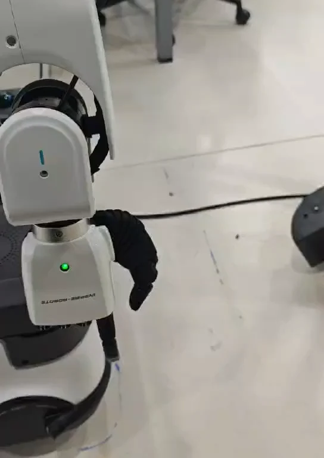
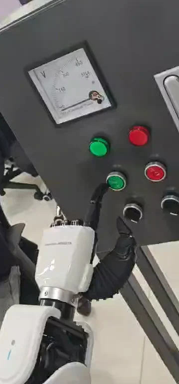
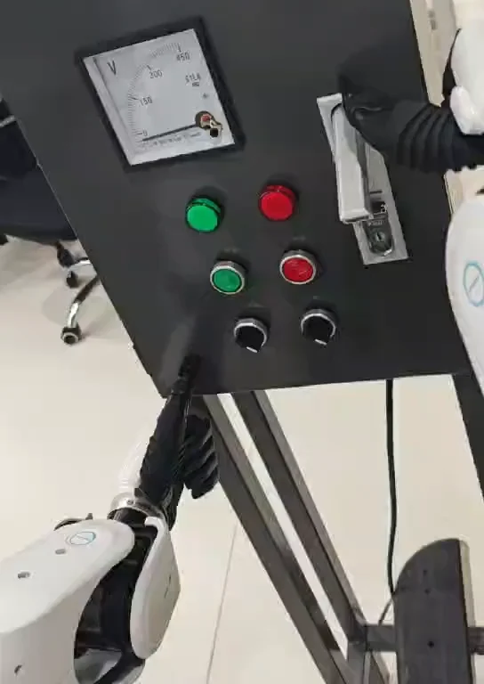
03 / 09 · Industrial computer vision
A desktop prototype joined underwater video, morphology, geometric features, and XGBoost.
Problem
The GUI exposed the original frame, processed mask, parameters, and two classifiers side by side.
Pipeline
Reported result
88.5% floc-level test accuracy for the binary XGBoost classifier; the résumé’s 89% is the rounded value. The same document reports 67.4% for a fixed threshold.


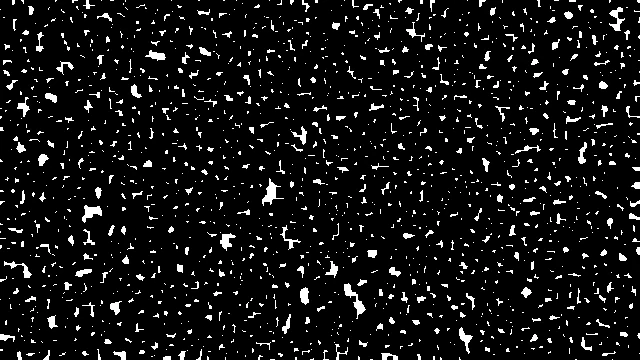
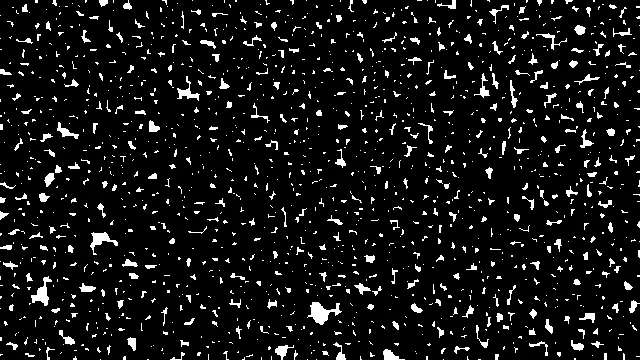
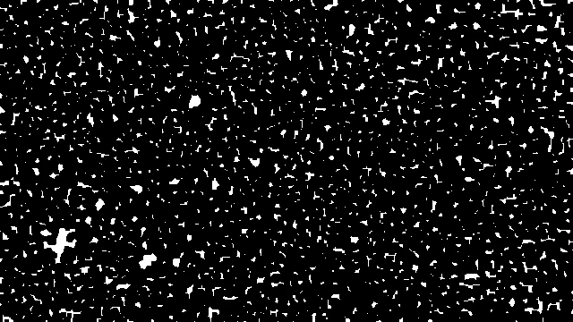
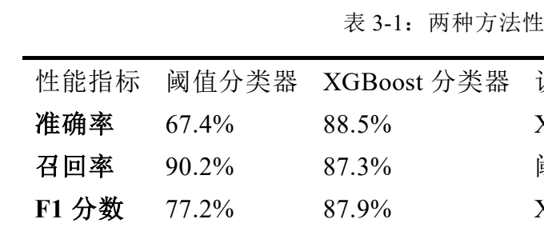
04 / 09 · Climate analytics
Structured ASEAN energy-system studies for optimization and interactive scenario analysis.
Problem
Scenario engines need explicit assets, constraints, trade links, units, and carbon-policy settings.
Work
Python · JSON Schema · convex optimization · OSeMOSYS/TIMES context · LLM workflow


05 / 09 · HIT capstone
A simulated study of reward design and stale observations in dynamic navigation.
Question
The simulation varied stale observations while comparing reward logic and network variants.
Method
Reported result
98.1% versus 92.6% success is +5.5 percentage points (+5.9% relative); mean path length was 29.113 versus 30.852.


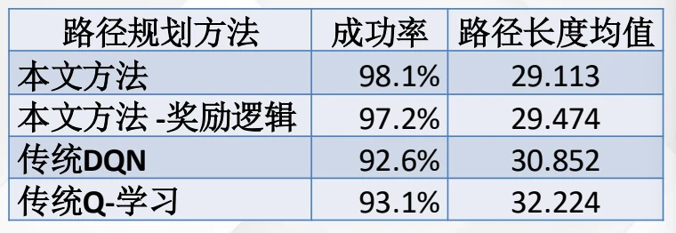
06 / 09 · HIT innovation project
A first-prize HIT team project selected at national level, from detection to cross-frame restoration and recognition.
Problem
The team pipeline covered text detection, frame tracking, multi-frame restoration, and recognition.
Documented contribution
The final acceptance report assigns me the Transformer-inspired recognizer and the coupling of recognition features into the restoration network.
Outcome
First prize in HIT’s Innovation and Entrepreneurship Programme; selected for national-level continuation.
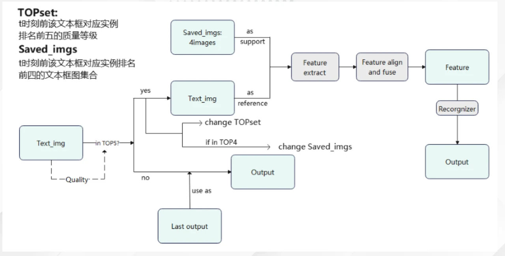
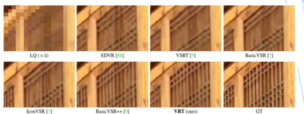
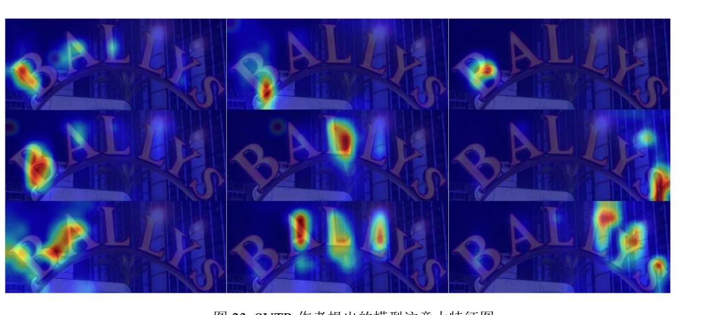
07 / 09 · Open work
Two merged vector-search changes, an agricultural KBQA assessment, and early prompt-engineering course work.
Added distance metrics and filtering, with tests and examples around the new query behavior.
Added SQ/BQ vector-index quantization levels and corresponding distance constraints.
RAG knowledge base, closed/open questions, prompt injection, and jailbreak tests; résumé reports 100+ questions and 10+ attacks.
Proofreading, terminology/API alignment, prompt reproduction, and chatbot experiments. Exact contribution commits still need linking.
08 / 09 · Credentials
Seven professional certifications and two NVIDIA DLI course certificates visible in the supplied record.
09 / 09 · Questions
Systems engineering now; robot learning next. Keep the questions close to physical evidence.
Questions I’m chasing
What keeps me curious
Decentralized multi-agent infrastructure: a practical touchpoint is the ANP handle zyx.awiki.ai.
AI + formalized mathematics: still an early interest; current foundations are formal languages, context-free grammars, and propositional logic.
Slide 1 of 9: Profile